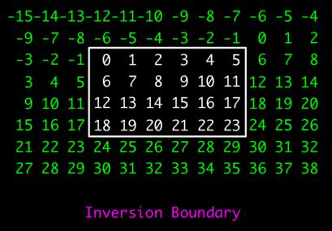

Mylib Core Module Reference
System-wide types and routines.
More...
#include <mylib.h>
Structures
Enumerated Scalars
| |
Value_Kind
| : { UVAL, IVAL, FVAL } |
| |
Value_Type
| : { UINT8_TYPE, UINT16_TYPE, UINT32_TYPE, UINT64_TYPE,
INT8_TYPE, INT16_TYPE, INT32_TYPE, INT64_TYPE,
FLOAT32_TYPE, FLOAT64_TYPE } |
|
|
| |
| |
Operator
| : { SET_OP, ADD_OP, SUB_OP, MUL_OP, DIV_OP, POW_OP, LSH_OP, RSH_OP, MIN_OP, MAX_OP } |
| |
Comparator
| : { LE_COMP, LT_COMP, EQ_COMP, NE_COMP, GT_COMP, GE_COMP } |
|
|
Descriptive Types
Macro Constants
Routines
| Value |
VALU
(uint64 u) |
| Value |
VALI
(int64 i) |
| Value |
VALF
(float64 f) |
Detailed Description
The Mylib module contains types, constants, enumerated scalars,
and routines, that are used throughout the system and are not properly a part of any
class or module per se.
A number of type definitions are used throughout mainly because they further document
the meaning of a return value or parameter. For example, a boolean is just an int, but
when an entity is declared to be of type boolean one immediately understands that it is only
conveying true or false according to whether its value is non-zero or not, respectively.
Similarly, a string is always a C-style 0-terminated sequence of chars.
We carefully adhere to using such descriptive types for variables pertaining to arrays.
Specifically:
Dimn_Type is used consistently for the type of an array's dimension, Indx_Type for an
index into an array, Size_Type for the size of an array, and Offs_Type for an offset
relative to an index in an array. Note carefully that a dimension is limited to
2 billion but the size of an array is effectively unbounded. Moreover, by choosing
signed versus unsigned integers for these types, while we lose the ability to have dimensions
up to 4 billion, the potential for subtle signed-unsigned value comparison bugs and other
such complications are avoided, easing programming for both implementors and users alike.
In addition there are also macro defined constants for the Value_Type and scale of each
of these four array location types as it is not uncommon for one to make arrays of them, e.g.
a Coordinate is a Vector of dimension values.
Many routines operate on an Array where the array may have any dimensionality and its
elements can be of any type. Similarly, many routines need to recieve or return a Value
that is a single number that may be of any of the ten scalar types over which an array may
be defined. The enum Value_Type captures the ten possible types and a Value is realized
as a union that can hold any Value_Type as either a uint64, an int64, or a float64.
The enum Value_Kind indicates whether a Value_Type should be interpreted as a uint64
(i.e. UVAL), an int64 (i.e. IVAL), or a float64 (i.e. FVAL).
The 3-routines VALU, VALI, and VALF are used to easily create values, e.g.
VALF(2.3)
VALI(2*i+3)
where in the example i is an integer variable.
The important feature of a Value is that its size is 8-bytes and so it is passed and
returned exactly as C base type, say a double, would be. On some machines the routines
are realized as macros.
Routines in Mylib often need the concept of border values beyond the boundary
of the array. Matlab makes you create another array that explicitly has the required
border. This is exceedingly wasteful in memory, especially when one is working on a
very large 3D or 4D array, a common occurence with microscopy data. Mylib currently
supports five types of boundaries that are implicit in that any library routine that
needs values beyond the border of the array computes them on the fly. For users, that
need to write code that involves boundary effects, the library simplifes matters with
a Frame object that allows one to get these border values explicity in a small window
of current interest as one traverses the array in question.
The current boundary effect is set globally for the system by calling one of
five boundary routines that sets the implicit boundary type according to the name of
the routine. Initially the "0-boundary" is the current boundary effect. A given
boundary effect stays in force until it is changed with another such call. Note that
this is not re-entrant albeit it is thread-safe. The five
boundary setting routines and the definition of their boundaries are given in the table
below. To keep it conceptually simple it is assumed A[0..W] is a one-dimensional array
and the table shows how the value of A[-x] and A[W+x] is computed for x > 0.
One can extrapolate a boundary effect to higher dimensions by induction.
| Function | Boundary Effect |
|---|
| Use_Zero_Boundary |
A[-x] = 0 | A[W+x] = 0 |
| Use_Reflective_Boundary |
A[-x] = A[x] | A[W+x] = A[w-x] |
| Use_Wrap_Boundary |
A[-x] = A[W-x] | A[W+x] = A[x] |
| Use_Extend_Boundary |
A[-x] = A[0] | A[W+x] = A[W] |
| Use_Inversion_Boundary |
A[-x] = 2*A[0]-A[x] | A[W+x] = 2*A[W]-A[W-x] |
Structure Documentation
| • |
uval | : uint64 |
| • |
ival | : int64 |
| • |
rval | : float64 |
A Value is a union that holds either a uint64, int64, or float64 and is thus capable of
encoding any value over the ten possible types for array elements. The appealing property of
a Value is that it behaves like an 8-byte scalar, e.g. a double, and so is passed by value,
can be returned by a function, and so on. The routines VALU, VALI, and VALF create
values for you.
Enumerated Scalars Documentation
| Value_Kind | : { UVAL, IVAL, FVAL } |
The three possible cases for the union of a Value. UVAL indicates a value holds a
uint64 value, IVAL indicates an int64 value, and FVAL indicates a float64 value.
| Value_Type | : { UINT8_TYPE, UINT16_TYPE, UINT32_TYPE, UINT64_TYPE,
INT8_TYPE, INT16_TYPE, INT32_TYPE, INT64_TYPE,
FLOAT32_TYPE, FLOAT64_TYPE } |
The ten possible types of elements for an array. The interpretation of each enum constant
should be obvious, e.g. UINT32_TYPE denotes that the elements are of type uint32.
| Operator | : { SET_OP, ADD_OP, SUB_OP, MUL_OP, DIV_OP, POW_OP, LSH_OP, RSH_OP, MIN_OP, MAX_OP } |
An Operator value specifies that a particular binary operation is to be applied. For
examples, see Array_Op_Scalar and Array_Op_Array. The values and associated operations
are as follows:
| Operator | Effect |
|---|
| SET_OP | a = b |
| ADD_OP | a + b |
| SUB_OP | a - b |
| MUL_OP | a * b |
| DIV_OP | a / b |
| POW_OP | a ^ b |
| LSH_OP | a << b |
| RSH_OP | a >> b |
| MIN_OP | min(a,b) |
| MAX_OP | max(a,b) |
| Comparator | : { LE_COMP, LT_COMP, EQ_COMP, NE_COMP, GT_COMP, GE_COMP } |
A Comparator value specifies that a particular comparison is to be performed. For
examples, see Draw_Floodfill and Record_Basic. The values and associated
comparisons are as follows:
| Operator | Effect |
|---|
| LE_COMP | a <= b |
| LT_COMP | a < b |
| EQ_COMP | a = b |
| NE_COMP | a != b |
| GT_COMP | a > b |
| GE_COMP | a >= b |
Descriptive Types Documentation
| Dimn_Type | : int32 |
| Indx_Type | : int64 |
| Size_Type | : int64 |
| Offs_Type | : int64 |
Dimn_Type denotes the type of a dimension of an array, Indx_Type the type of an index
into an array, Size_Type the size of an array, and Offs_Type an offset
relative to an index into an array. Note carefully that a dimension is limited to
2 billion but the size of an array is effectively unbounded. Moreover, by choosing
signed versus unsigned integers for these types, while we lose the ability to have dimensions
up to 4 billion, the potential for subtle signed-unsigned value comparison bugs and other
such complications are avoided, easing programming for both implementors and users alike.
Macro Constants Documentation
In order to be thread safe, Mylib routines involve critical sections when a common resource
must be shared amongst threads. In order to allow for parallelism, Mylib often
maintains NUM_THREADS instances of the resource and lets up to that many threads proceed
through their critical sections in parallel, each with a different instance of the resource.
As such NUM_THREADS is a critical determiner of threaded code performance and ideally
it should be equal to the number of hardware cores of the underlying machine. In the
current package it is set to 8. If you decide to tune this parameter, you must rebuild the
system after redefining it.
Routine Documentation
These simple functions create Values of each possible Value_Kind. On compilers that
support it, they are realized as macros.
| void |
Use_Zero_Boundary () |
Set the current boundary effect to the "zero-border", i.e., A[-x] = A[W+x] = 0 for x > 0
and A[0..W] a one-dimensional array. The image below illustrates this border for a 2-dimensional
array delimited by the white rectangle, with the border elements in green.
| void |
Use_Reflective_Boundary () |
Set the current boundary effect to the "reflective-border", i.e., A[-x] = A[x] and
A[W+x] = A[W-x] for x > 0 and A[0..W] a one-dimensional array. The image below illustrates
this border for a 2-dimensional array delimited by the white rectangle, with the border elements
in green.
| void |
Use_Wrap_Boundary () |
Set the current boundary effect to the "wrap-border", i.e., A[-x] = A[W-x] and
A[W+x] = A[x] for x > 0 and A[0..W] a one-dimensional array. The image below illustrates
this border for a 2-dimensional array delimited by the white rectangle, with the border elements
in green.
| void |
Use_Extend_Boundary () |
Set the current boundary effect to the "extend-border", i.e., A[-x] = A[0] and
A[W+x] = A[W] for x > 0 and A[0..W] a one-dimensional array. The image below illustrates
this border for a 2-dimensional array delimited by the white rectangle, with the border elements
in green.
| void |
Use_Inversion_Boundary () |
Set the current boundary effect to the "inversion-border", i.e., A[-x] = 2*A[0]-A[x] and
A[W+x] = 2*A[W]-A[W-x] for x > 0 and A[0..W] a one-dimensional array. The image below
illustrates this border for a 2-dimensional array delimited by the white rectangle, with the
border elements in green.

|